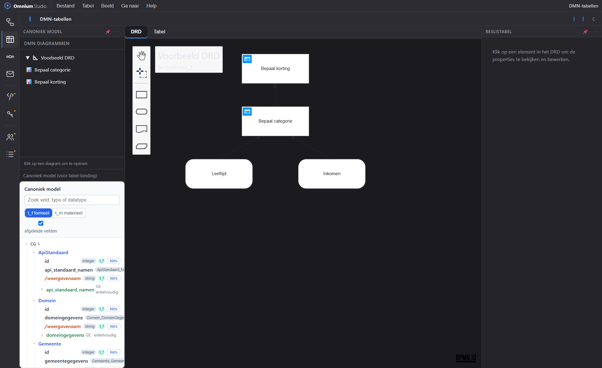

Leg bedrijfsregels expliciet vast in DMN 1.3 (dmn-js): Decision Requirements Diagrams én beslistabellen. Input- en outputkolommen binden aan velden uit het canonieke model, zodat regels en gegevens nooit uit elkaar lopen.

De DMN-activiteit combineert de volledige dmn-js-modeler met de bestaande beslistabel-editor, in tabs.
Teken decisions, input-data en knowledge sources en hun afhankelijkheden — chained decisions inbegrepen.
Bewerk regels, hit-policy en in-/outputs in een vertrouwde tabel-editor met FieldRef-binding.
Kies in-/outputvelden uit de Model Picker (formeel/materieel tijdas), zodat kolommen echte modelvelden zijn.
DRD-tab exporteert DMN XML; tabel-tab exporteert de beslistabel als JSON.
Beslissingen staan niet op zichzelf; ze worden onderdeel van processen en gegevensvalidatie: